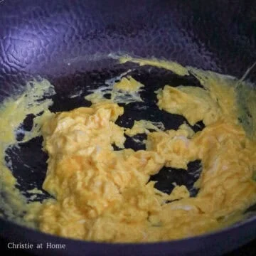

Egg Fried Rice

Description
Egg fried rice is a popular dish, particularly in East Asian cuisines, characterized by stir-fried cooked rice combined with beaten eggs, often with other ingredients like spring onions, soy sauce, and oil. It's a versatile dish that can be customized with various spices, proteins and vegetables.
Ingredients
- Day-Old Cooked Rice
- Green Onions
- Soy Sauce
- Oyster Sauce
- Eggs
- Vegetable Oil
Additional Tips
- Use a steel wok for smoky flavor. When the oil meets the hot steel, it creates a smoke in the pan. This can't be achieved with a non-stick wok.
- Use day-old cold rice to get a more fluffy fried rice.
- Pour the soy sauce along the edges of the wok for more flavor!
Instructions
1. Heat vegetable oil in a large pan or wok. If you are using a wok, allow the oil to smoke and if using a normal pan, skip smoking the oil. Pour in beaten eggs. Quickly stir-fry the eggs so they take shape.

2. Once the eggs take shape but are still moist, quickly toss in rice. If rice is clumped together, break apart in pan.
3. Sweep everything to the side of the pan, add remaining oil into empty space with green onions. Mix green onions into rice and eggs.
4. Add soy sauce and sesame oil along the edges of the pan. Then toss until grains are colored brown. Remove off heat. Serve hot and enjoy while it's hot!